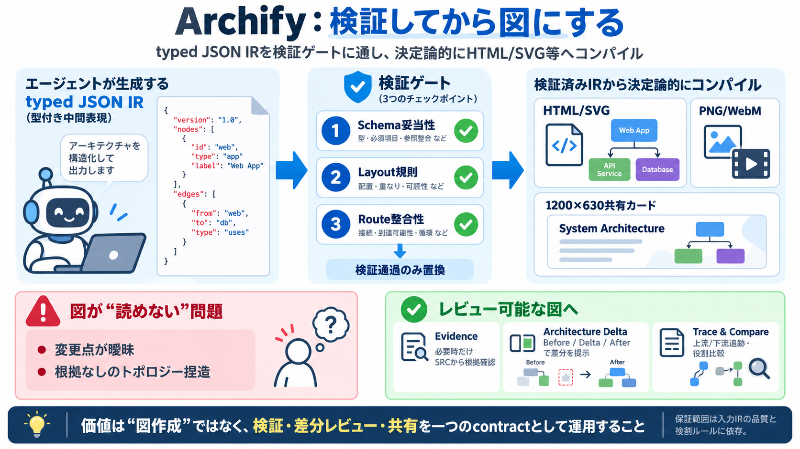

GitHub - tt-a1i/archify: Agent skill for beautiful,...
Archify is an agent skill that plugs into Raven, Cursor, Claude Code, Codex CLI, and OpenCode to turn a codebase or syst…

検証してから図にする
エージェントが作る typed JSON IR（型付きIR） を、スキーマと整合性のゲートを通して決定論的に図へコンパイルします。
図が「読めない」問題
エージェント生成の図は、見た目が変わるだけでもレビューが難しくなり、「正しさの根拠」が追えなくなります。
図の前に「審査」
Archifyは「自由な文章→図」ではなく、typed JSON IR を検証してから成果物を置換します。
決定論的コンパイル
複数の検証ゲートを通った内容だけを、HTML/SVG等の図として 決定論的（deterministic） にコンパイルします。
Atomic validation
schema・レイアウト・route・ラベルと経路のクリアランス等の条件を満たすまで、最終成果物としては置換しません。
根拠を「必要な時だけ」
ノードに SRC マークが付く場合に限り、Git検証済みファイルと行レンジを開ける形を想定します。
変更点を事実で
Before/Delta/Afterの比較で、追加・削除・変更・移動・再ルーティングを機械的に提示します。
図より「運用」へ
成果物として 1200×630 の共有カードを用意し、README/リリース投稿/SNS投稿に載せやすい運用を重視します。
閲覧機能の要点
検索、上流/下流の到達範囲トレース、役割の比較、有限のガイド付きストーリー（章）などを備えます。
保証範囲の注意
検証器がどう判定するか、そして typed JSON IR を作る過程の根拠が何かで、最終的な正確性は変わります。
テレメトリは抑制志向
更新チェックでは固定の安定マニフェストを取りに行く場合があり、ただしバージョン/エージェント/プロンプト/アカウント情報/ETag等は送らないと記載があります。
導入の要点
Archifyの価値は「図を作る」ではなく、検証・差分レビュー・共有までを一つの contract（契約） として設計している点にあります。
Archify is an agent skill that plugs into Raven, Cursor, Claude Code, Codex CLI, and OpenCode to turn a codebase or syst…
## Repository files navigation English · 简体中文 # Archify Turn a codebase or system description into a polished, intera…
Anthropic's agentic coding CLI, and the reference implementation of Agent Skills. Drop a skill folder into ~/.claude/ski…
# Archify Create a self-contained, interactive HTML diagram from a small typed JSON specification. Static output is the…
Most agents still answer that request with Mermaid slop: rounded boxes, auto-layout arrows, and a picture nobody can pro…